Basisdata Relational¶
Basisdata relational merupakan salah satu model basisdata pada DBMS (Database Management System). Model Relasional banyak digunakan sejak tahun 90an hingga saat ini karena berbagai kelebihannya dalam memanajemen data dalam jumlah besar. Pada bagian ini akan dibahas mengenai basisdata relasional, khususnya PostgreSQL.
Pemodelan data pada Basisdata Relasional¶
Kita ambil sebuah contoh untuk kasus penanggulangan kebencanaan: anda ditugaskan oleh pimpinan anda untuk melakukan inventarisasi data yang diperoleh dari hasil pemetaan akibat bencana banjir di suatu daerah. Anda misalnya berurusan dengan data-data jumlah pengungsi dari masing-masing desa, kerusakan pada tiap desa, lokasi kantung-kantung pengungsian, kebutuhan tiap kepala, dan lain sebagainya. Apabila dinyatakan dalam bentuk tabel, data-data tersebut mungkin tampak seperti berikut:
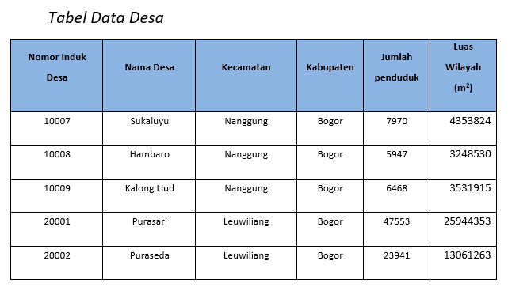
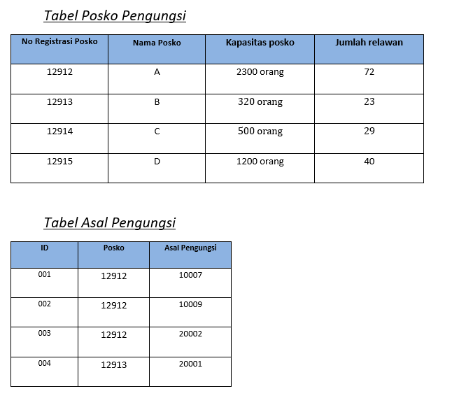
Apabila suatu ketika Anda ditanya, ‘Dari mana saja asal pengungsi di Posko A?’, apa jawaban yang akan anda berikan? Apa yang akan anda lakukan untuk memperoleh jawaban yang diinginkan? Pertama-tama, Anda mungkin akan melihat pada masing-masing tabel, kemudian mencari informasi yang sesuai pada tiap tabel tersebut. Tentunya hal ini mudah dilakukan apabila data yang disediakan cukup sedikit. Bagaimana jika data yang ada berjumlah ratusan atau bahkan mungkin ribuan data?
Di sinilah peranan Basisdata. Sebuah sistem basisdata menghubungkan kumpulan data menjadi sebuah sistem yang terintegrasi. Dapat dikatakan, basisdata merupakan kumpulan dari tabel-tabel yang saling terhubung. Dengan menggunakan basisdata, Anda dapat mengambil data dari suatu tabel berdasarkan data dari tabel yang lain.
Gambaran umum sebuah basisdata adalah sekumpulan tabel yang saling terhubung. Hubungan antar tabel ini dapat dilakukan dengan berbagai macam cara. Salah satunya adalah dengan menggunakan cara yang Anda lihat pada contoh tabel-tabel di atas.
Pengantar Basisdata Relational¶
Sistem Manajemen Basis Data Relasional (RDBMS) adalah kumpulan program dan fungsi berbasis tabel yang menyediakan antarmuka antara pengguna dan aplikasi dan basis data, memberikan cara sistematis untuk membuat, memperbarui, menghapus, mengelola, dan mengambil data. Sebagian besar sistem manajemen database relasional menggunakan bahasa pemrograman SQL untuk mengakses database dan banyak yang mengikuti properti ACID (Atomicity, Consistency, Isolation, Durability) dari database:
Atomicity: Jika ada pernyataan dalam transaksi yang gagal, seluruh transaksi gagal dan database dibiarkan tidak berubah.
Consistency: Transaksi harus memenuhi semua protokol yang ditentukan oleh sistem - tidak ada transaksi yang diselesaikan sebagian.
Isolation: Tidak ada transaksi yang memiliki akses ke transaksi lain yang belum selesai. Setiap transaksi bersifat independen.
Durability: Setelah transaksi dilakukan, transaksi akan tetap dilakukan melalui penggunaan log transaksi dan cadangan.
c
Basisdata relasional menyimpan data (entitas dunia nyata) dalam bentuk tabel serta menyediakan cara yang efisien, intuitif, dan fleksibel untuk menyimpan dan mengakses informasi pada tabel tersebut secara terstruktur. Tabel pada basisdata relasional juga dikenal sebagai relasi, terdiri dari kolom yang berisi satu atau lebih kategori data; dan baris, juga dikenal sebagai record, berisi sekumpulan data yang ditentukan oleh kategori.
Aplikasi Database Management System/DBMS (seperti PostgreSQL) mengakses data dengan menentukan kueri, yang menggunakan operasi untuk mengidentifikasi atribut, memilih tuples, dan menentukan relasi pada data. Model relasional untuk manajemen basis data dikembangkan oleh ilmuwan komputer IBM Edgar F. Codd pada tahun 1970.
Beberapa istilah pada Basisdata Relasional¶
Sebagai review, berikut adalah beberapa istilah yang dikenal pada basisdata relasional:
Tabel: Merupakan struktur penyimpanan dasar dari basis data objek relasional, terdiri dari satu atau lebih kolom (column) dan nol atau lebih baris (row).
Row (baris): Baris merupakan kombinasi dari nilai-nilai kolom dalam tabel; sebagai contoh, informasi tentang suatu departemen pada tabel ‘Departemen’. Baris seringkali disebut dengan record atau tuple.
Column (kolom): Kolom menggambarkan jenis data pada tabel; Kolom di definisikan dengan nama kolom dan tipe data beserta panjang data tertentu.
Field: Field merupakan pertemuan antara baris dan kolom. Sebuah field menggambarkan satu keterangan mengenai data. Jika pada suatu field tidak terdapat data, maka field tersebut dikatakan memiliki nilai “null” atau kosong.
Primary key: Primary key atau kunci utama merupakan kolom atau kumpulan kolom yang secara unik membedakan antara baris yang satu dengan lainnya; Kolom yang merupakan primary key ini tidak boleh mengandung nilai “null”, dan nilainya harus unik (berbeda antara baris satu dengan lainnya).
Foreign key: Foreign key atau kunci tamu merupakan kolom atau kumpulan kolom yang mengacu ke primary key pada tabel yang sama atau tabel lain. Foreign key ini dibuat untuk memaksakan aturan-aturan relasi pada basis data. Nilai data dari foreign key harus sesuai dengan nilai data pada kolom dari tabel yang diacunya atau bernilai “null”.
Relasi merupakan interaksi antara tabel yang menunjukkan hubungan antara objek-objek yang ada di dunia nyata. Relasi menyatakan hubungan antar tabel sebagai model dari dunia nyata.
{kind=link}
Relasi pada basisdata relasional¶
Jika kita pahami bahwa entitas dunia nyata dimodelkan sebagai sebuah relasi (atau tabel) pada basisdata relasional, maka hubungan antar entitas tersebut di dunia nyata juga dapat kita modelkan. Pada sebuah basisdata relasional, hubungan antar entitas dapat disederhanakan menjadi tiga bentuk saja: One to One, One to Many dan Many to Many. Berikut adalah model relasi pada sebuah basisdata relasional1 tersebut:
One to One (1 to 1) Relasi database model ini terjadi apalabila sebuah data terdapat pada 2 buah tabel, dan hanya diperbolehkan satu data saja pada masing masing tabel (unique record), sama halnya seperti primary key, record yang ada pada model ini tidak boleh ada yang sama.
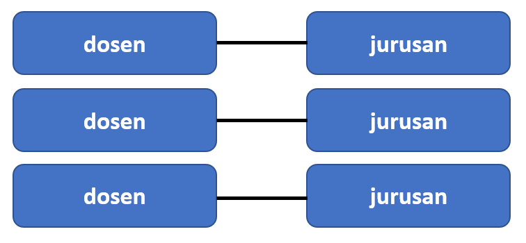
Dalam bentuk tabel relasional, hasilnya adalah seperti ini:
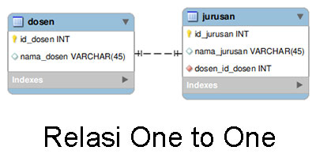
One to Many (1 to n) Relasi database model ini membolehkan data yang sama pada tabel kedua, tapi hanya membolehkan data yang bersifat unique (unik) pada tabel pertama. Jadi pada model tabel kedua boleh memiliki beberapa data yang sama. 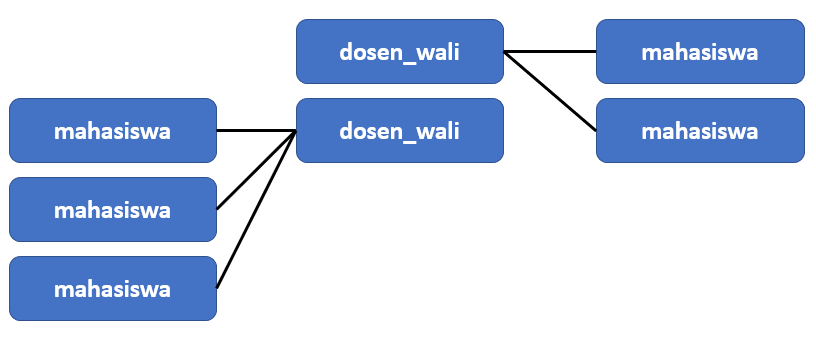
Dalam bentuk tabel: 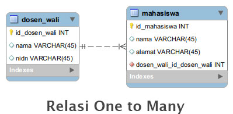
Many to many (n to m) Berbeda dengan kedua model diatas, relasi database model ini membolehkan beberapa data yang sama baik pada tabel pertama maupun tabel kedua. Dengan demikian tidak ada unique record di kedua tabel tersebut. 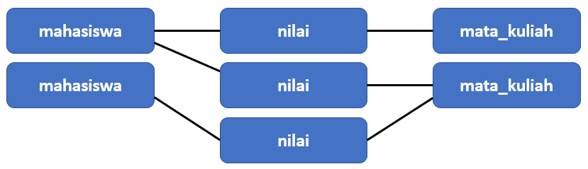
Dalam bentuk tabel: 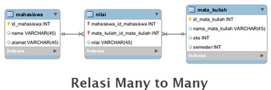
Apabila kita gambarkan hubungan yang kompleks antar semua entitas pada basisdata, kita akan memperoleh sebuah diagram yang disebut dengan Diagram Entity Relationship (Diagram ER).
Operasi pada Basisdata Relasional¶
Apabila kita menganggap basisdata sebagai sebuah kumpulan dari entitas yang saling terhubung, maka seperti halnya sebuah bilangan matematika, kita dapat menggunakan berbagai operasi pada entitas ini untuk memperoleh jawaban dari pertanyaan yang kita ajukan. Codd sendiri awalnya mendefinisikan delapan operasi berbeda, yang kemudian disebut dengan Relational Algebra. Relational Algebra merupakan bahasa prosedural yang menggunakan operator unary atau binary pada relasi atau tabel. Hasil dari Aljabar relasional ini adalah sebuah tabel lain yang menggambarkan hubungan dari kedua entitas.
{kind=link}
Pada sebuah RDBMS, operasi aljabar relasional ini diwujudkan menggunakan bahasa SQL, seperti yang akan dibahas sebagai berikut.
Structured Query Language (SQL)¶
Apabila Anda menggunakan komputer untuk membuat basisdata pada contoh di awal bab ini, Anda akan dengan cepat menjawab pertanyaan yang diajukan sebelumnya. Apabila Anda mencari: ‘Darimana saja asal pengungsi di posko A?’, maka komputer akan langsung melihat tabel Posko Pengungsi untuk melihat nomor identifikasi masing-masing posko pengungsian, kemudian mencocokkannya dengan tabel **Asal Pengungsi **untuk melihat Desa apa saja yang ada di sana. Sekarang, bagaimana kita menanyakan pertanyaan seperti ini kepada komputer?
Bagaimana kita membuat suatu sistem basisdata dan mengajukan pertanyaan (pertanyaan=‘QUERY’) kepada komputer agar kita memperoleh data yang kita inginkan? Untuk itulah kita akan mempelajari mengenai bahasa SQL (Structured Query Language). Bahasa inilah yang akan kita gunakan untuk ‘bertanya’ atau mengajukan ‘query’ kepada komputer. Kita juga menggunakan bahasa SQL untuk menyelesaikan berbagai macam operasi pada aljabar relasional yang kita gunakan untuk mendapatkan jawaban dari pertanyaan yang kita inginkan.
Bahasa SQL¶
SQL merupakan serangkaian perintah yang kita gunakan untuk membuat dan melakukan manajemen terhadap suatu basisdata di komputer. Misalnya, untuk membuat sebuah tabel seperti ini:
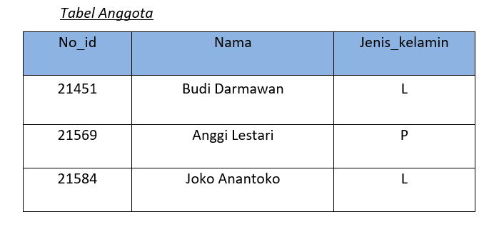
Dalam bahasa SQL akan tertulis seperti ini:
CREATE TABLE Anggota
(
No_id INTEGER NOT NULL,
nama VARCHAR(20),
jenis_kelamin VARCHAR(2)
);
INSERT INTO anggota VALUES ('21451', 'Budi Darmawan', 'L');
INSERT INTO anggota VALUES ('21569', 'Anggi Lestari', 'P');
INSERT INTO anggota VALUES ('21584', 'Joko Anantoko', 'L');
PRIMARY KEY no_id;
Berikut adalah penjelasan beberapa perintah dasar di atas:
CREATE TABLE Anggota (
CREATE TABLE
Fungsi dari perintah ini adalah untuk membuat sebuah tabel baru, yang tentu saja isinya masih kosong. Untuk mengisi tabel yang baru dibuat ini kita gunakan perintah INSERT INTO dan VALUES seperti yang akan dijelaskan di bawah.Anggota
Adalah nama/judul dari tabel pertama yang akan kita buat pada basisdata ini. Judul tabel ini merupakan variable, artinya, Anda dapat menggunakan nama apapun yang Anda inginkan, asalkan merupakan satu buah kata (kita lihat, tanda spasi pada kata-kata ‘bidang tanah’ diganti dengan tanda underscore/garis bawah. Ini untuk menjaga variable tersebut hanya merupakan satu kata).
No_id INTEGER NOT NULL,
nama VARCHAR(20),
jenis_kelamin VARCHAR(2)
No_id, Nama dan Jenis_kelamin
No_id merupakan nama kolom pertama yang kita isikan (lihat tabel pada contoh di atas agar lebih jelas). No_id ini adalah kolom yang akan kita fungsikan untuk memuat identitas unik masing-masing orang. Demikian pula, Nama dan Jenis_kelamin merupakan nama-nama kolom yang kita buat pada tabel anggota yang akan kita isi dengan keterangan-keterangan yang kita inginkan.Tipe Data
INTEGER dan VARCHAR yang anda gunakan pada baris-baris perintah tadi berfungsi untuk menjelaskan tipe data dari kolom yang Anda buat. Berikut beberapa tipe data yang dapat anda gunakan:INTEGER : Menyatakan data berupa bilangan bulat. Panjang data yang dapat dimuat adalah antara -2147483648 sampai 2147483647.
FLOAT : Menyatakan data berupa bilangan desimal
VARCHAR : Menyatakan sembarang karakter (huruf, angka, atau karakter yang lain). Apabila anda menambahkan bilangan dalam tanda kurung di belakangnya, misalnya VARCHAR(2), artinya anda membatasi maksimal hanya 2 karakter yang akan ditampilkan, tidak boleh lebih.
TEXT : Menampilkan baris teks. Bedanya dengan tipe data character adalah panjang data yang bisa ditampung. Anda bisa memasukkan beberapa baris kalimat pada tipe data ini.
DATE : Memasukkan tanggal ke dalam kolom
BOOLEAN : Apabila anda memilih tipe data ini untuk sebuah kolom, artinya kolom tersebut hanya bisa memliki dua macam nilai: ‘TRUE’ atau ‘FALSE’. Biasanya tipe data ini digunakan untuk menyatakan pilihan. Perhatikan bahwa tiap kali anda membuat sebuah kolom, anda harus memisahkannya dengan baris perintah selanjutnya menggunakan tanda koma (,). Ini adalah salah satu aturan penulisan pada bahasa SQL.
PRIMARY KEY no_id;
PRIMARY KEY
Pada baris perintah ini, kita memberi tahu komputer bahwa kolom No_id akan kita jadikan sebagai PRIMARY KEY. Primary key adalah kolom yang akan kita gunakan sebagai penghubung dengan tabel lain. Dalam hal ini, data yang berada pada kolom no_id haruslah bersifat unik. Artinya, data-data pada kolom ini harus berbeda antara satu dengan yang lainnya.
Menggunakan Query untuk menanyakan pertanyaan pada Basisdata¶
Di atas kita telah melihat penjelasan bagaimana bahasa SQL digunakan untuk membuat sebuah tabel baru. Pada bagian ini kita akan menanyakan beberapa pertanyaan pada tabel tersebut.
Sekarang, dengan menggunakan tabel anggota di atas sebagai acuan, kita dapat menanyakan pertanyaan berikut:
SELECT * FROM anggota
SELECT dan FROM pada baris perintah di atas digunakan untuk menampilkan isi dari tabel yang dipanggil (pada contoh adalah tabel anggota). Tanda asterisk (*) di atas digunakan untuk menampilkan keseluruhan data pada semua kolom di tabel tersebut. Apabila anda memanggil perintah tersebut pada sebuah perangkat lunak basisdata (seperti PostgreSQL yang akan kita pelajari nanti), maka perintah tersebut akan menampilkan seluruh isi tabel anggota.
Perintah tersebut akan menampilkan semua isi kolom nama pada tabel anggota, seperti berikut:
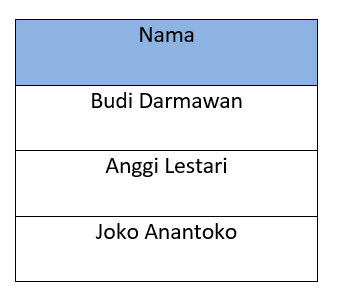
Apabila anda hanya ingin menampilkan satu baris tertentu, Anda dapat menggunakan perintah WHERE:
SELECT * FROM anggota WHERE No_id = 21451
hasilnya:
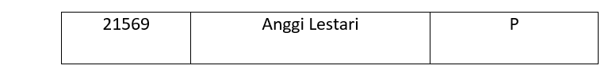
Apa keluaran dari bahasa SQL berikut?
SELECT nama FROM anggota WHERE jenis_kelamin = ‘L’
Sebuah perintah SQL dapat menjadi sangat kompleks: semakin rumit informasi yang ingin kita peroleh, semakin banyak relasi yang terlibat, maka akan semakin rumit pula Query yang harus kita ajukan. Meskipun demikian, SQL dapat memperoleh informasi yang cukup rumit hanya dengan beberapa perintah sederhana, sehingga sangat ideal untuk keperluan analisis data dalam jumlah besar, khususnya data spasial.
DDL, DML, DCL dan TCL¶
Kita telah melihat beberapa perintah SQL yang dapat digunakan untuk ‘bertanya’ pada basisdata menggunakan Query tertentu. Perintah (command) dalam bahasa SQL seperti yang disebutkan di atas dapat dikelompokkan menjadi empat kelompok besar: Data Definition Language (DDL), Data Manipulation Language (DML), Data Control Language (DCL) dan Transaction Control Language (TCL). Keempat jenis perintah ini membagi bahasa SQL ke dalam jenis operasi yang dilakukan:
{kind=link}
Berikut penjelasan untuk tiap operasi:
Data Definition Language (DDL)
Perintah yang dikelompokkan sebagai DDL digunakan pada saat pembuatan skema dan pendefinisian basisdata, serta bagaimana data disimpan pada basidata.
CREATE - Digunakan untuk membuat basisdata baru serta objek-objek yang terdapat di dalamnya (TABLE, INDEX, VIEW, FUNCTION, dan sebagainya)
ALTER - Merubah struktur basidata dan objek di dalamnya
DROP - Menghapus basisdata atau objek di dalamnya
TRUNCATE - Menghapus semua record pada basisdata
RENAME - Mengganti nama sebuah objek basisdata
Data Manipulation Language (DML)
DML terdiri dari sebagian besar perintah yang kita gunakan pada sebuah basisdata. DML berkaitan dengan manipulasi data dan objek pada basisdata, termasuk untuk menyimpan, memodifikasi, mengambil data, menghapus dan memperbarui data pada basisdata.
SELECT - Digunakan untuk memilih dan mengambil data dari basisdata berdasarkan kriteria tertentu
INSERT - Digunakan untuk memasukkan data ke dalam relasi
UPDATE - Memungkinkan pengubahan nilai dari beberapa atribut dalam tupel yang ada.
DELETE - Digunakan untuk menghapus tupel dari tabel.
MERGE - Menggabungkan data baru pada data yang sudah ada
Penggunaan tiap perintah di atas akan dikontrol oleh CONSTRAINT yang telah ditetapkan pada relasi atau basisdata tersebut. Contoh konstrain yang diterapkan pada basisdata adalah pembatasan tipe data pada kolom sebuah tabel.
Berikut adalah contoh dari penggunaan perintah DML:
Insert Operation
Operasi Insert menambahkan data baru pada sebuah tabel sesuai dengan kolom yang tersedia
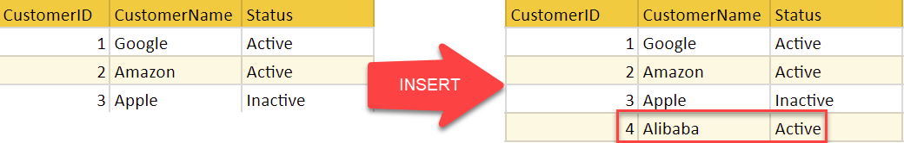
Update Operation
Pada tabel di bawah, status
CustomerName=Appleberubah dariinactivemenjadiactive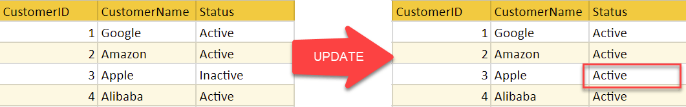
Delete Operation Pada operasi penghapusan, suatu kriteria diberikan melalui Query untuk 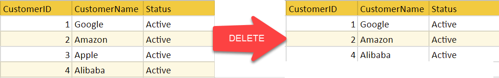
Select Operation
Operasi berikut memilih Customer dengan nama “Amazon” 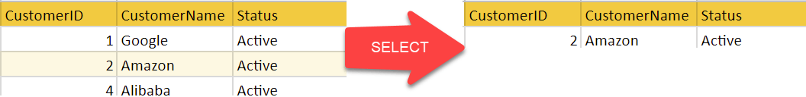
Data Control Language (DCL)
Perintah pada DCL sebagian besar terkait dengan pemberian hak, permission, dan pengaturan kontrol lain pada basisdata.
GRANT - Memberikan hak dan izin (Priviledges) kepada pengguna untuk mengakses sebuah basisdat
REVOKE - Menghilangkan hak pada pengguna
Transaction Control Language (TCL)
TCL digunakan untuk mengatur transaksi pada sebuah basisdata, yaitu:
COMMIT - menyimpan operasi transaksi
ROLLBACK - kembali pada rekaman transaksi sebelumnya pada saat terjadi kesalahan
SET TRANSACTION - mendefinisikan karakteristik transaksi
Setelah ini, kita akan menggunakan PostgreSQL untuk melakukan Query menggunakan Bahasa SQL. Terlebih dahulu lakukan instalasi sesuai dengan panduan yang diberikan sebagai berikut.
Instalasi dan Pengaturan Basisdata PostgreSQL¶
PostgreSQL merupakan perangkat lunak yang digunakan untuk melakukan manajemen basisdata, sedangkan PostGIS merupakan perangkat lunak tambahan (‘Plugin’) pada PostgreSQL yang digunakan untuk menambahkan fungsi keruangan (spasial) pada PostgreSQL. Pada bagian ini diuraikan cara membuat basisdata dengan menggunakan PostgreSQL/PostGIS, dengan lebih dahulu membahas mengenai instalasi PostgreSQL dan PostGIS menggunakan Docker.
Latihan: Instalasi dan Pengaturan Docker¶
Pada latihan ini akan dibahas mengenai instalasi Docker. Docker nantinya akan kita gunakan sebagai Container untuk mempermudah instalasi PostgreSQL dan PostGIS. Arsitektur Docker adalah sebagai berikut:
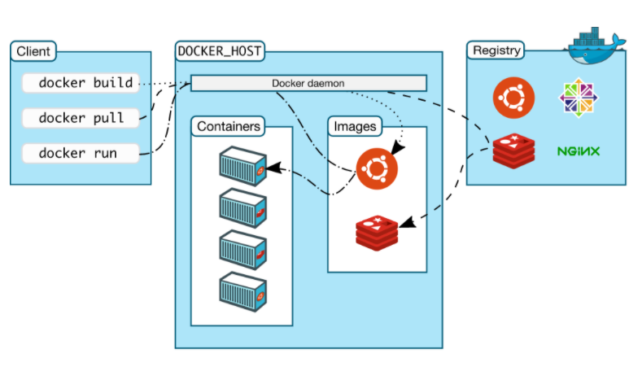
Langkah berikut merujuk pada Panduan Resmi Instalasi Docker:
Lakukan update, kemudian lakukan instalasi beberapa dependencies untuk Docker
sudo apt-get install \ apt-transport-https \ ca-certificates \ curl \ gnupg-agent \ software-properties-common
Tambahkan GPG official untuk Docker:
curl -fsSL https://download.docker.com/linux/ubuntu/gpg | sudo apt-key add -Periksa fingerprint untuk GPG yang telah ditambahkan ke Ubuntu
sudo apt-key fingerprint 0EBFCD88
Tambahkan repository baru. Docker memiliki repository tersendiri sehingga perlu memberi tahu apt untuk mengambil instalasi dari repository ini:
sudo add-apt-repository \ "deb [arch=amd64] https://download.docker.com/linux/ubuntu \ $(lsb_release -cs) \ stable"
Update kembali apt:
sudo apt-get update sudo apt-get install docker-ce docker-ce-cli containerd.io
Uji apakah docker sudah berhasil diinstall
sudo docker run hello-world
Memasukkan user ke dalam grup
docker. Langkah ini perlu untuk menghilangkansudopada perintah untuk memanggil docker.sudo usermod -aG docker $USER newgrp docker
Catatan
Docker memerlukan Systemd untuk menjalankan servicenya, sama seperti Tomcat pada materi sebelumnya. Untuk itu, apabila muncul pesan kesalahan terkait systemd atau systemctl pada WSL, coba kembali langkah-langkah untuk mengkoreksi system seperti yang telah disebutkan sebelumnya.
Setelah instalasi Docker berhasil, selanjutnya adalah menggunakan Docker untuk melakukan instalasi Image untuk PostGIS. Image adalah paket aplikasi yang dibuat oleh developer untuk memuat serangkaian perintah dan dapat diduplikasi oleh siapapun yang menghendaki. Image pada Docker tersimpan pada Docker Hub sebagai satu repository tempat Image dibagikan:
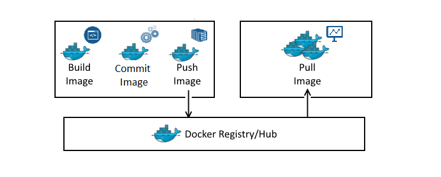
Latihan: Memulai Docker untuk PostGIS¶
Untuk keperluan latihan ini kita akan menggunakan Image PostGIS yang dibuat oleh Kartoza. Sebenarnya, terdapat banyak Image yang sudah dibuat oleh banyak developer. Kita dapat mencari Image terkait PostGIS menggunakan perintah ‘search’ pada Docker:
docker search postgis
hasilnya:
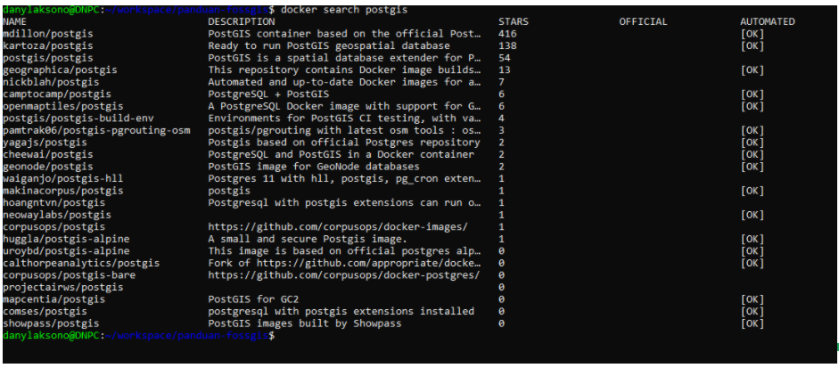
Image PostGIS yang dibuat oleh tim Kartoza dapat dijumpai pada Docker Hub sebagai berikut: https://hub.docker.com/r/kartoza/postgis/
Berikut adalah langkah instalasi Image PostGIS dengan Docker 2:
Membuat Persistance Volume. Persistance Volume digunakan agar Docker menyimpan berkas pada lokasi yang dapat diakses, yaitu pada mesin WSL. Berikut perintahnya:
docker volume create pg_data
Untuk menginstall PostGIS kita gunakan perintah berikut:
docker run --name=postgis -d -e POSTGRES_USER=postgres -e POSTGRES_PASS=postgres -e POSTGRES_DBNAME=gis -e ALLOW_IP_RANGE=0.0.0.0/0 -p 5432:5432 -v pg_data:/var/lib/postgresql --restart=always kartoza/postgis:13.0
docker run –name = postgis memberi tahu Docker bahwa container baru kami akan diberi nama postgis
-d menjalankan kontainer di latar belakang (mode terpisah)
-e POSTGRES_USER = postgres the -eflag menyetel variabel lingkungan di dalam penampung. Yang ini digunakan untuk mengonfigurasi nama peran login di PostgreSQL yang akan memiliki hak superuser (admin) di database. Anda dapat mengubah nama ini menjadi apa pun yang Anda inginkan.
-e POSTGRES_PASS = postgres menyetel variabel lingkungan yang akan menyetel kata sandi peran login menjadi `kata sandi. Anda dapat mengatur ini menjadi apa pun yang Anda inginkan.
-e POSTGRES_DBNAME = gis seperti yang bisa Anda tebak, variabel lingkungan memberi tahu container untuk membuat database baru di server dengan nama gis. Setelah database dibuat maka extension PostGIS akan diaktifkan di dalamnya.
-e ALLOW_IP_RANGE = 0.0.0.0 / 0 memberi tahu container untuk mengkonfigurasi PostgreSQL untuk menerima koneksi dari siapa pun. Jika Anda tidak mengatur ini maka database hanya akan menerima koneksi dari alamat menggunakan subnet jaringan Docker.
-p 5432: 5432 memetakan port 5432 pada VM host ke port 5432 pada container. Ini diperlukan karena server database mendengarkan koneksi pada port 5432 secara default.
-v pg_data: / var / lib / postgresql memberi tahu sistem file container untuk memasang volume pg_data yang baru saja kita buat ke jalur / var / lib / postgresql. Ini berarti bahwa data apa pun yang disimpan atau dibuat container di direktori itu akan disimpan dalam volume pg_data.
–restart = selalu membuat kebijakan restart untuk penampung Anda. Sekarang penampung Anda akan mulai setiap kali mesin virtual Docker dimulai. Jika ini tidak disetel, Anda harus memulai penampung secara manual setiap kali VM di-boot dengan docker start postgis
kartoza / postgis: 13.0 memberitahu Docker untuk menarik repositori kartoza / postgis dari Docker Hub, menggunakan PostgreSQL versi 9.6 dan PostGIS versi 2.4. Anda dapat melihat versi lain yang tersedia di sini
Tunggu sampai instalasi selesai. Periksa apakah mesin yang digunakan sudah menyala menggunakan perintah:
docker ps
Selanjutnya, PostGIS dan PostgreSQL siap untuk digunakan.
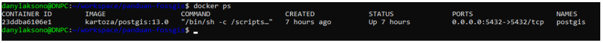
Menggunakan Query SQL pada Basisdata¶
Untuk mengirimkan SQL pada Basisdata PostgreSQL dapat digunakan beberapa aplikasi antarmuka yang berbeda. psql dan pgAdmin barangkali merupakan antarmuka untuk basisdata PostgreSQL yang paling terkenal. Sejatinya, koneksi pada basisdata dapat dilakukan pada berbagai aplikasi, dengan syarat terdapat port dan host yang terbuka untuk melakukan koneksi pada PostgreSQL seperti yang akan kita lakukan nanti dengan QGIS. Untuk memulai, terlebih dahulu akan kita gunakan kedua aplikasi yang telah disebutkan di atas.
Latihan: Menggunakan psql untuk melakukan query sederhana¶
psql merupakan aplikasi untuk manajemen client postgreSQL. Dengan aplikasi ini, script SQL dapat dibuat melalui command prompt. Contohnya, koneksi pada basisdata dapat dilakukan sebagai berikut:
psql -d database -h host -U user -W
Aplikasi ini tersedia bersama dengan instalasi PostgreSQL dan PostGIS yang sudah kita install menggunakan Docker Kartoza. Dalam hal ini, aplikasi ini sekarang tersimpan di dalam mesin Docker, dan bukan pada WSL, sehingga kita perlu melakukan langkah tambahan untuk melakukan akses tersebut:
Masuk ke dalam Docker menggunakan perintah
docker execdocker exec -it postgis bashInstall text editor, misalnya nano:
apt-get update && apt-get install nanoMasuk ke folder instalasi PostgreSQL
cd /etc/postgresql/13/main/Dengan menggunakan nano, lakukan editing pada file
pg_hba.conf. Ubahpeermenjaditrustpada Database administrative login by Unix domain socket seperti berikut: 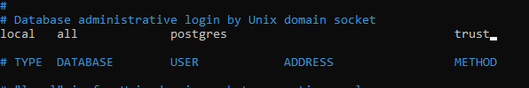Keluar dari mesin dan lakukan restart untuk kontainer PostGIS
docker restart postgis
Gunakan
psqlseperti berikut:docker exec -it postgis psql -U postgresmaka kita akan masuk ke shell untuk
psql: 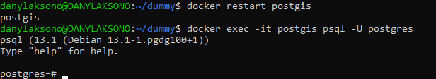Pada shell ini kita dapat langsung mengetikkan Query yang kita inginkan, misalnya:
postgres=# SELECT * FROM anggota;Selain melalui konsol, kita juga dapat membuat query menggunakan command, seperti berikut:
docker exec -it postgis psql -U postgres -d latihan -c 'SELECT * FROM anggota'
Catatan
Tentunya untuk kedua contoh SELECT di atas, basisdata latihan dan tabel anggota harus sudah tersedia terlebih dahulu.
Untuk latihan ini, coba gunakan query pada tabel anggota seperti di atas menggunakan psql, yaitu dari pembuatan tabel hingga mengajukan pertanyaan. Buat basisdata baru dengan nama Latihan, kemudian masukkan tabel anggota. Gunakan perintah-perintah DDL dan DML untuk membuat dan mengoperasikan basisdata ini melalui psql.
Daftar perintah untuk psql dapat dilihat pada:
https://www.postgresqltutorial.com/postgresql-cheat-sheet/.
Latihan: Menggunakan pgAdmin sebagai GUI Basisdata PostgreSQL¶
Pada bagian ini, pgAdmin4 akan digunakan sebagai antarmuka untuk PostgreSQL. pgAdmin merupakan antarmuka PostgreSQL yang menyediakan GUI (Graphical User Interface) sehingga memudahkan untuk mengajukan Query, memanajemen basisdata, memonitor transaksi, dan seterusnya.
Terlebih dahulu unduh pgAdmin4 dari alamat berikut: https://www.pgadmin.org/download/
Selanjutnya, lakukan instalasi pada sistem operasi Windows. Tampilan pgAdmin4 setelah instalasi adalah sebagai berikut:
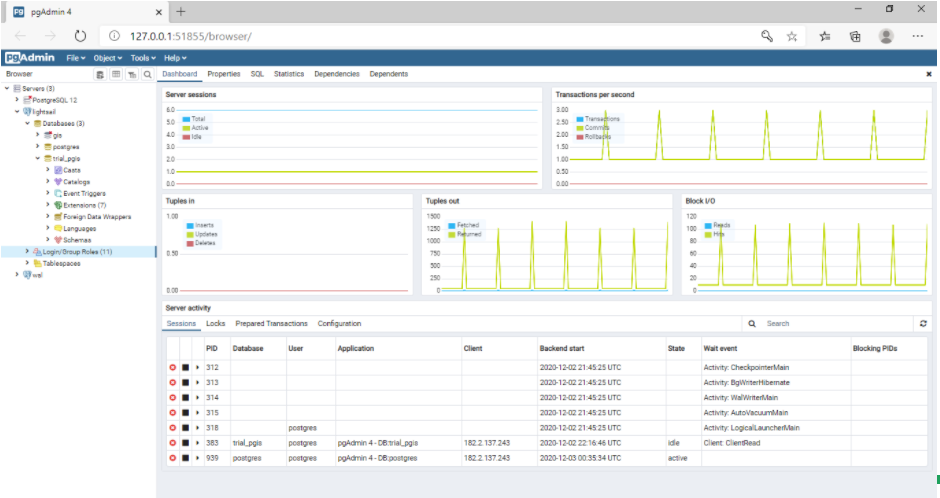
Koneksi dapat dilakukan pada basisdata melalui pgAdmin4 sebagai berikut. Klik kanan pada Server, kemudian pilih Create Server.
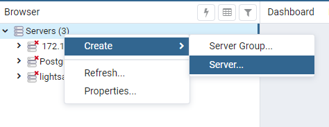
Masukkan nama dan parameter koneksi seperti contoh berikut:
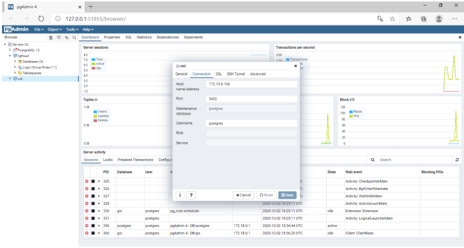
dimana alamat host adalah ip address yang digunakan oleh mesin Docker.
untuk mendapatkan alamat tersebut, gunakan perintah:
ip addr
kemudian lihat ip address untuk eth0. Alamat ini adalah alamat IP yang digunakan oleh Windows untuk berkomunikasi dengan WSL, sehingga kita dapat menggunakannya untuk terhubung dengan PostgreSQL. Pada kasus instalasi PostgreSQL langsung di mesin server, alamat yang dicari ini dapat dibuat cukup dengan menggunakan localhost saja. Diagram berikut menggambarkan bagaimana Windows terhubung pada WSL dengan menggunakan koneksi melalui IP Address yang dimaksud.
{kind=link}
Setelah terhubung, PostgreSQL akan menampilkan beberapa menu yang dapat digunakan untuk melakukan manajemen basisdata. Untuk melakukan Query pada basisdata tertentu, klik pada basisdata tersebut, kemudian gunakan menu Query Tool untuk membuat query terhadap basisdata ini.
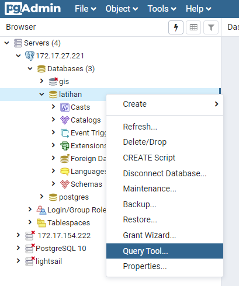
Perintah SQL seperti yang kita sebutkan di atas dapat digunakan pada jendela Query yang tersedia.
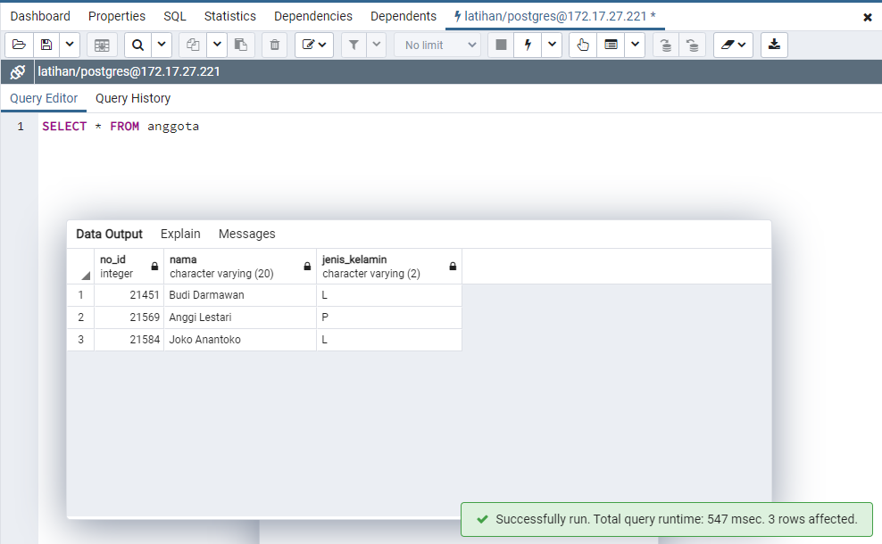
Catatan
Mesin Docker PostGIS yang kita panggil pada WSL akan tetap berjalan sampai kita matikan. Untuk memeriksa mesin apa saja yang sedang berjalan, kita dapat gunakan:
docker ps
Maka Docker akan menampilkan daftar mesin yang sedang berjalan. Untuk menghentikan semua mesin, kita gunakan perintah:
docker stop $(docker ps -aq)
dan untuk memulai kembali mesin tersebut, cukup panggil dengan menggunakan:
docker start postgis
dimana postgis adalah nama mesin yang kita definisikan menggunakan parameter --name pada saat memanggil image ini. Dalam hal ini Docker tidak akan mengunduh instalasi baru karena berkas tersebut masih ada pada WSL.